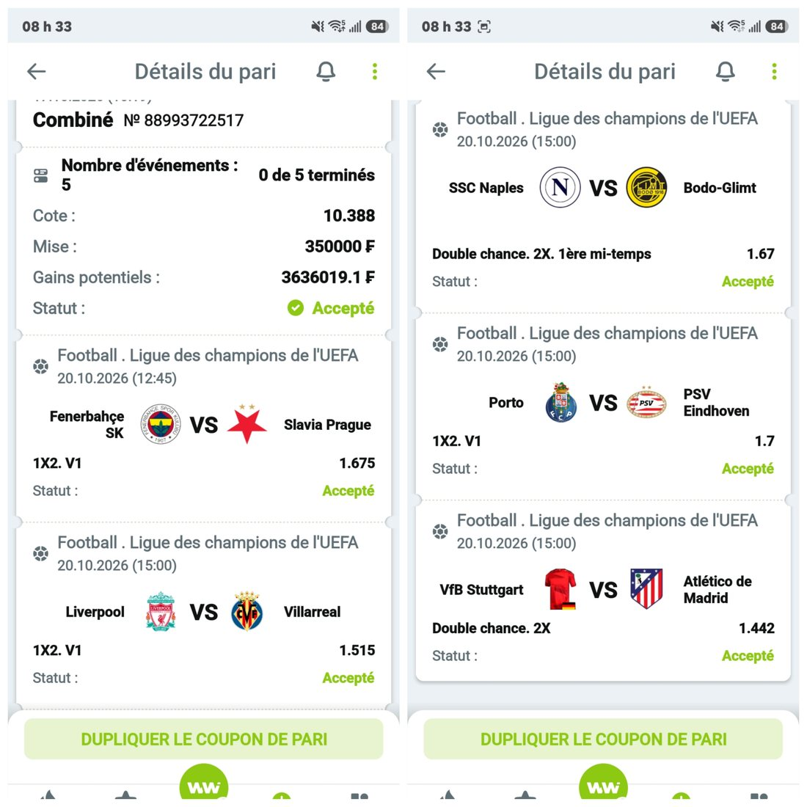
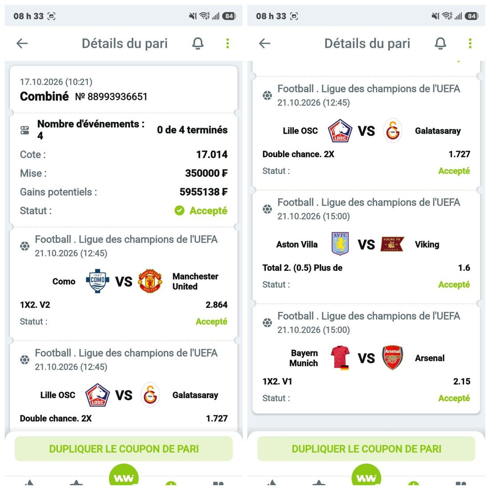

⚽ Prochains matchs analysés
Vendredi 30 octobre
Samedi 31 octobre
Dimanche 1 novembre
Mardi 3 novembre
🎫 Mes coupons joués
Les combinés que j'ai joués. Tu peux reprendre les mêmes matchs sur WinWin (inscription avec le code FFN).


✓ Matchs terminés
Je garde tous mes pronostics en ligne, gagnés comme perdus : c'est plus honnête.
Dimanche 25 octobre
Mercredi 21 octobre
Mardi 20 octobre
PSGvsBarcelone
Les deux équipes marquent
✅ GagnéLiverpoolvsVillarreal
Victoire de Liverpool@1.515
✅ GagnéNaplesvsBodo Glimt
Bodo Glimt ou nul à la mi-temps@1.67
❌ PerduPortovsPSV Eindhoven
Victoire de Porto@1.70
❌ PerduVfB StuttgartvsAtlético Madrid
Atlético ou match nul@1.442
✅ GagnéFenerbahçevsSlavia Prague
Victoire de Fenerbahçe@1.675
❌ PerduDimanche 18 octobre
Samedi 17 octobre
Mercredi 14 octobre
Mardi 13 octobre
GalatasarayvsBarcelone
Barcelone marque plus de 2,5 buts@1.60
❌ PerduAtlético MadridvsManchester United
Victoire de l'Atlético Madrid@2.16
✅ GagnéVillarrealvsNaples
Villarreal marque au moins 2 buts@2.00
✅ GagnéRB LeipzigvsPSV Eindhoven
PSV ou nul à la mi-temps@1.47
✅ GagnéRC LensvsSporting Portugal
Victoire du RC Lens@2.62
❌ Perdu● Les analyses en avant-première sur Telegram
Je confirme chaque pronostic le jour du match, après les compositions, sur mon canal Telegram et ma chaîne WhatsApp. C'est gratuit.
Un pronostic n'est jamais une certitude. Ne mise que ce que tu peux te permettre de perdre. 18+
● Parie avec les bons codes promo
Avant de suivre mes pronos, ouvre ton compte sur un de nos bookmakers partenaires et profite du bonus de bienvenue :